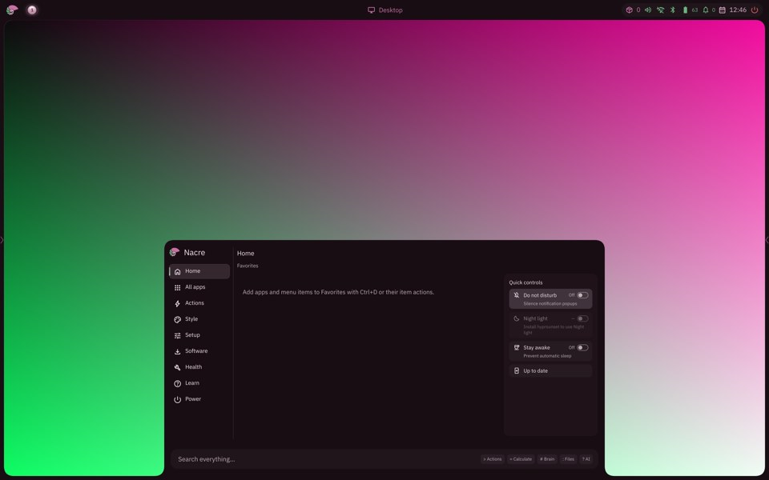
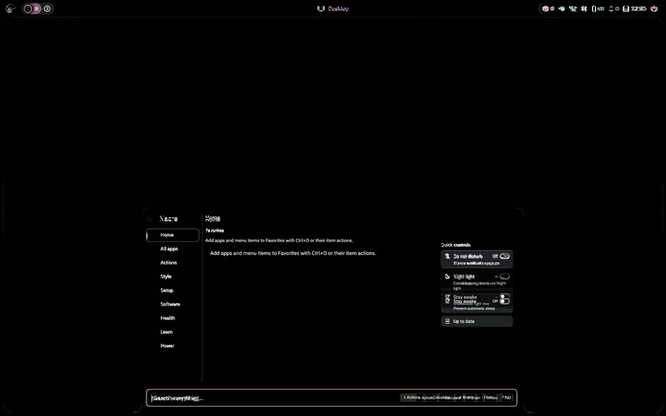
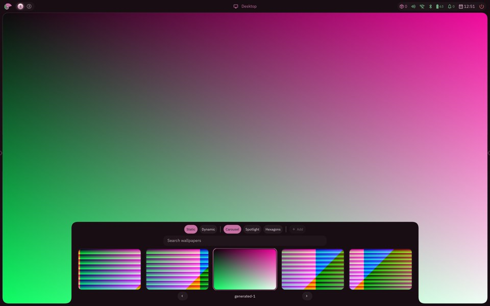
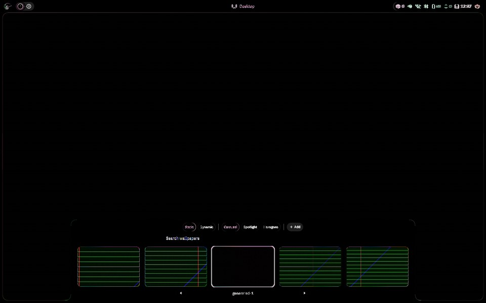
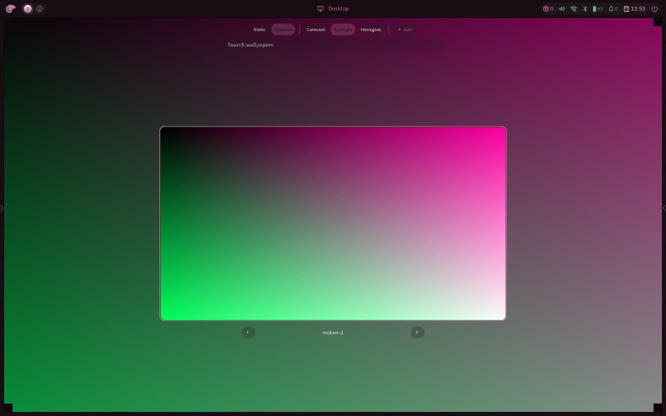
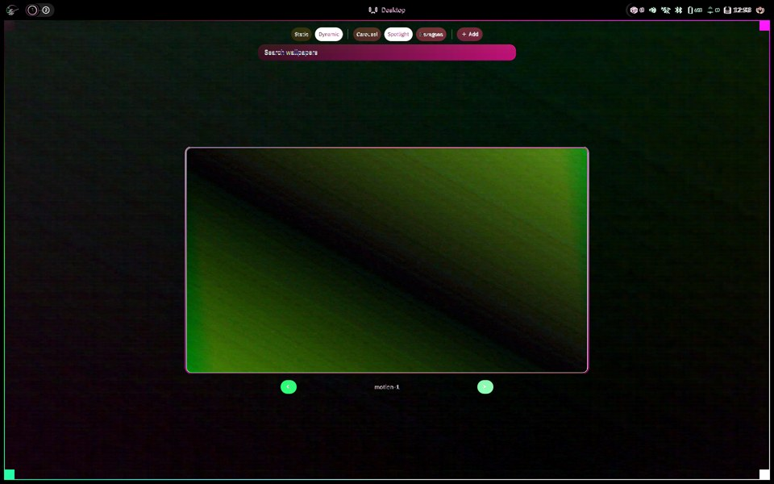
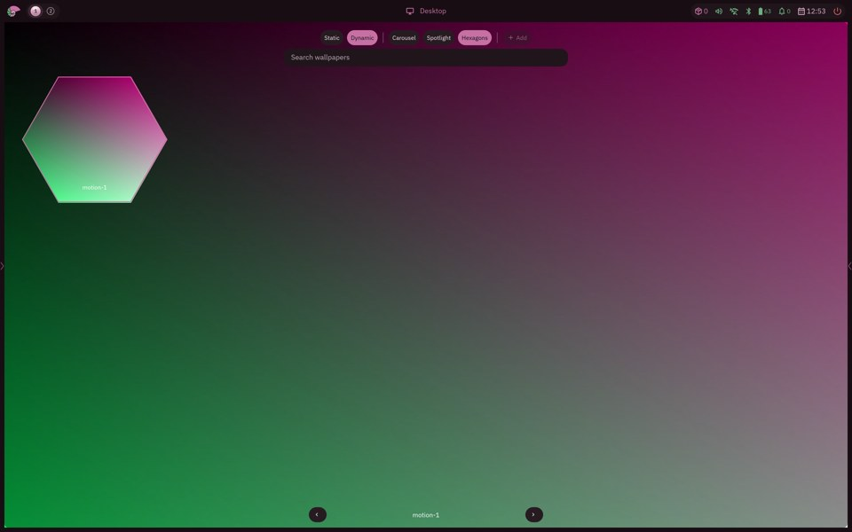
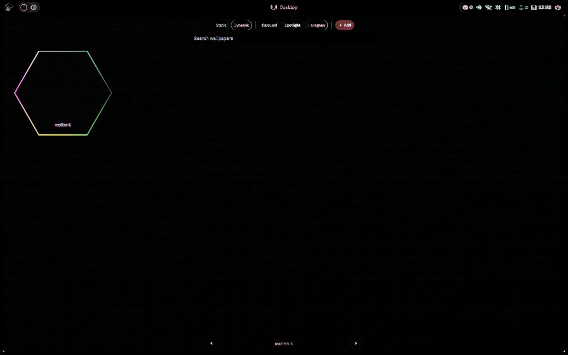
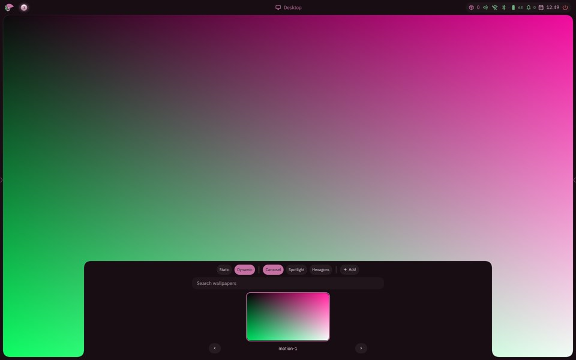

Bead against the QML shell
Output {"name": "winit", "mode": [2880, 1800], "scale": 1.5, "logical": [1920, 1200]}.
rmse and bar rmse are percent of full scale (lower is closer); changed is the share of pixels differing by more than 16/255. Click an image for the full-size capture.
launcher open transition, first change..settled: qml: 50..251 ms, 56 frames, progress 10/50/90 % at 29/44/195 ms / bead: 101..351 ms, 56 frames, progress 10/50/90 % at 85/135/250 ms
qml bottom edge (ms:px): 0:0 25:0 50:336 75:336 101:336 126:336 151:336 176:336 201:336 226:336 251:336 276:336 301:336 326:336 351:336 376:336 401:336 426:336 451:336 476:336 501:336 527:336 552:336 577:336 602:336 627:336 652:336 677:336 702:336 727:336 752:336 777:336 802:336 827:336 852:336 877:336 902:336 927:336 953:336 978:336 1003:336 1028:336 1053:336 1078:336 1103:336 1128:336 1153:336 1178:336 1203:336 1228:336 1253:336 1278:336 1303:336 1328:336 1353:336 1378:336
bead bottom edge (ms:px): 1:0 26:336 51:336 76:336 101:340 126:340 151:336 176:340 201:336 226:336 251:340 276:340 301:336 326:336 351:336 377:336 402:336 427:336 452:336 477:336 502:336 527:336 552:336 577:336 602:336 627:336 652:336 677:336 702:336 727:336 752:336 777:336 803:336 828:336 853:336 878:336 903:336 928:336 953:336 978:336 1003:336 1028:336 1053:336 1078:336 1103:336 1128:336 1153:336 1178:336 1203:336 1228:336 1254:336 1279:336 1304:336 1329:336 1354:336 1379:336
close transition, first change..settled: qml: 25..176 ms, 56 frames, progress 10/50/90 % at 4/22/108 ms / bead: 25..276 ms, 56 frames, progress 10/50/90 % at 56/101/192 ms
qml bottom edge (ms:px): 0:0 25:336 50:336 75:336 100:336 125:336 150:336 176:336 201:336 226:336 251:336 276:336 301:336 326:336 351:336 376:336 401:336 426:336 451:336 476:336 501:336 526:336 551:336 576:336 602:336 627:336 652:336 677:336 702:336 727:336 752:336 777:336 802:336 827:336 852:336 877:336 902:336 927:336 952:336 977:336 1002:336 1027:336 1053:336 1078:336 1103:336 1128:336 1153:336 1178:336 1203:336 1228:336 1253:336 1278:336 1303:336 1328:336 1353:336 1378:336
bead bottom edge (ms:px): 0:0 25:333 50:0 75:339 100:338 126:339 151:340 176:340 201:339 226:340 251:336 276:336 301:336 326:336 351:336 376:336 401:336 426:336 451:336 476:336 501:336 526:336 552:336 577:336 602:336 627:336 652:336 677:336 702:336 727:336 752:336 777:336 802:336 827:336 852:336 877:336 902:336 927:336 952:336 978:336 1003:336 1028:336 1053:336 1078:336 1103:336 1128:336 1153:336 1178:336 1203:336 1228:336 1253:336 1278:336 1303:336 1328:336 1353:336 1378:336
launcher-pressed QML (Nacre) 
Bead difference x4 (rmse 4.027%, changed 0.959%) 
launcher-wallpapers QML (Nacre) Bead 
difference x4 (rmse 2.987%, changed 0.909%) wallpaper-carousel QML (Nacre) Bead difference x4 (rmse 2.989%, changed 0.909%) open transition, first change..settled: qml: 50..226 ms, 40 frames, progress 10/50/90 % at 50/119/236 ms / bead: 25..276 ms, 40 frames, progress 10/50/90 % at 35/181/268 ms
qml bottom edge (ms:px): 0:0 25:0 50:181 75:181 100:181 125:181 150:181 176:181 201:181 226:181 251:181 276:181 301:181 326:181 351:181 376:181 401:181 426:181 451:181 476:181 501:181 526:181 551:181 576:181 602:181 627:181 652:181 677:181 702:181 727:181 752:181 777:181 802:181 827:181 852:181 877:181 902:181 927:181 952:181 977:181
bead bottom edge (ms:px): 0:0 25:181 50:182 75:185 100:185 126:185 151:185 176:181 201:181 226:181 251:181 276:181 301:181 326:181 351:181 376:181 401:181 426:181 451:181 477:181 502:181 527:181 552:181 577:181 602:181 627:181 652:181 677:181 702:181 727:181 752:181 777:181 802:181 827:181 852:181 877:181 903:181 928:181 953:181 978:181
close transition, first change..settled: qml: 25..226 ms, 40 frames, progress 10/50/90 % at 5/36/147 ms / bead: 25..226 ms, 40 frames, progress 10/50/90 % at 16/108/193 ms
qml bottom edge (ms:px): 0:0 25:181 50:181 75:181 100:181 125:181 151:181 176:181 201:181 226:181 251:181 276:181 301:181 326:181 351:181 376:181 401:181 426:181 451:181 476:181 501:181 526:181 551:181 577:181 602:181 627:181 652:181 677:181 702:181 727:181 752:181 777:181 802:181 827:181 852:181 877:181 902:181 927:181 952:181 977:181
bead bottom edge (ms:px): 0:0 25:185 50:185 75:185 100:185 125:181 151:181 176:184 201:185 226:181 251:181 276:181 301:181 326:181 351:181 376:181 401:181 426:181 451:181 476:181 501:181 526:181 551:181 577:181 602:181 627:181 652:181 677:181 702:181 727:181 752:181 777:181 802:181 827:181 852:181 877:181 902:181 927:181 952:181 977:181
wallpaper-hover QML (Nacre) Bead difference x4 (rmse 2.991%, changed 0.91%) wallpaper-pressed QML (Nacre) Bead difference x4 (rmse 2.991%, changed 0.91%) 
wallpaper-search QML (Nacre) Bead difference x4 (rmse 2.991%, changed 0.91%) wallpaper-spotlight open transition, first change..settled: qml: 50..226 ms, 40 frames, progress 10/50/90 % at 71/136/228 ms / bead: 25..303 ms, 40 frames, progress 10/50/90 % at 53/65/216 ms
qml bottom edge (ms:px): 0:0 25:0 50:596 75:596 100:595 125:595 151:595 176:595 201:595 226:595 251:595 276:595 301:595 326:595 351:595 376:595 401:595 426:595 451:595 477:595 503:595 528:595 554:595 580:595 606:595 632:595 657:595 684:595 709:595 736:595 761:595 786:595 812:595 837:595 863:595 888:595 914:595 940:595 965:595 991:595
bead bottom edge (ms:px): 0:0 25:596 50:596 75:596 100:596 125:596 151:596 176:596 201:596 226:596 252:596 277:596 303:596 328:596 355:596 380:596 406:596 432:596 458:596 483:596 509:596 535:596 560:596 586:596 611:596 636:596 662:596 687:596 713:596 738:596 765:596 790:596 816:596 842:596 867:596 892:596 918:596 945:596 971:596 996:596
close transition, first change..settled: qml: 25..226 ms, 40 frames, progress 10/50/90 % at 46/80/166 ms / bead: 50..327 ms, 40 frames, progress 10/50/90 % at 329/339/349 ms
qml bottom edge (ms:px): 0:0 25:595 50:595 75:595 100:595 125:595 150:595 176:595 201:595 226:595 251:596 276:595 301:596 326:595 351:595 376:595 402:595 428:595 453:595 479:595 504:595 531:595 556:595 581:595 606:595 632:595 657:595 683:595 709:595 734:595 760:595 785:595 811:595 836:595 862:595 887:595 913:595 938:595 964:595 990:595
bead bottom edge (ms:px): 0:0 25:595 50:595 75:595 100:595 125:595 151:595 176:595 201:595 226:595 251:595 276:595 301:595 327:595 352:596 378:596 404:596 429:596 455:596 481:596 508:596 533:596 559:596 585:596 611:596 636:596 661:596 686:596 712:596 737:596 763:596 788:596 813:596 839:596 865:596 890:596 916:596 941:596 967:596 993:596
wallpaper-hexagons open transition, first change..settled: qml: 50..226 ms, 40 frames, progress 10/50/90 % at 100/206/231 ms / bead: 25..404 ms, 39 frames, progress 10/50/90 % at 258/338/418 ms
qml bottom edge (ms:px): 0:0 25:0 50:596 75:596 100:595 125:595 151:595 176:596 201:596 226:595 251:595 276:595 301:595 326:595 351:595 376:595 401:595 426:595 451:595 478:595 503:595 530:595 555:595 580:595 605:595 630:595 656:595 681:595 706:595 732:595 757:595 783:595 809:595 834:595 860:595 885:595 911:595 937:595 962:595 988:595
bead bottom edge (ms:px): 0:0 25:600 50:600 75:600 101:600 126:600 151:600 176:600 201:600 226:600 251:600 277:600 303:600 328:600 353:597 379:597 404:597 430:596 456:596 482:596 508:596 534:596 559:596 585:596 616:596 641:596 667:596 693:596 719:596 744:596 771:596 796:596 821:596 847:596 873:596 898:596 923:596 949:596 975:596
close transition, first change..settled: qml: 25..226 ms, 40 frames, progress 10/50/90 % at 10/88/208 ms / bead: 75..353 ms, 40 frames, progress 10/50/90 % at 108/156/226 ms
qml bottom edge (ms:px): 0:0 25:595 50:595 75:595 100:595 125:595 151:595 176:595 201:595 226:595 251:596 276:596 301:595 326:595 351:595 377:595 402:595 428:595 453:595 478:595 504:595 529:595 554:595 580:595 605:595 631:595 657:595 683:595 708:595 734:595 760:595 785:595 811:595 836:595 862:595 887:595 913:595 939:595 964:595 990:595
bead bottom edge (ms:px): 0:0 25:0 50:0 75:600 100:600 126:600 151:600 176:600 201:600 226:600 251:600 276:600 302:600 328:600 353:600 379:596 405:596 430:596 455:596 481:596 506:596 532:596 557:596 582:596 607:596 633:596 658:596 683:596 708:596 734:596 759:596 784:596 810:596 836:596 861:596 887:596 914:596 939:596 964:596 990:596
wallpaper-dynamic-spotlight QML (Nacre) Bead 
difference x4 (rmse 4.436%, changed 5.03%) 
open transition, first change..settled: qml: 25..251 ms, 40 frames, progress 10/50/90 % at 67/127/219 ms / bead: 25..252 ms, 40 frames, progress 10/50/90 % at 27/39/79 ms
qml bottom edge (ms:px): 0:0 25:596 50:595 75:595 100:596 125:595 151:595 176:595 201:595 226:595 251:595 276:595 301:595 326:595 351:595 376:595 402:595 428:595 454:595 480:595 506:595 532:595 557:595 582:595 608:595 634:595 660:595 685:595 711:595 737:595 763:595 788:595 814:595 839:595 864:595 890:595 915:595 940:595 966:595 991:595
bead bottom edge (ms:px): 0:0 25:596 50:596 75:596 100:596 126:596 151:596 176:596 201:596 227:596 252:596 278:596 303:596 329:596 355:596 380:596 406:596 432:596 457:596 483:596 508:596 534:596 560:596 586:596 612:596 638:596 663:596 689:596 714:596 739:596 765:596 790:596 816:596 841:596 867:596 892:596 918:596 943:596 969:596 995:596
close transition, first change..settled: qml: 25..176 ms, 40 frames, progress 10/50/90 % at 34/85/166 ms / bead: 75..326 ms, 40 frames, progress 10/50/90 % at 328/339/349 ms
qml bottom edge (ms:px): 0:0 25:595 50:595 75:595 100:595 125:595 150:595 176:595 201:595 226:595 251:596 276:596 301:596 326:596 351:596 376:596 402:596 427:596 454:596 480:595 505:595 531:595 556:595 581:595 607:595 633:595 659:595 686:595 712:595 738:595 763:595 789:595 814:595 840:595 865:595 891:595 916:595 942:595 967:595 992:595
bead bottom edge (ms:px): 0:0 25:595 50:595 75:595 100:595 125:595 151:595 176:595 201:595 226:595 251:595 276:595 301:595 326:595 352:596 377:596 403:596 429:596 455:596 480:596 506:596 531:596 557:596 582:596 607:596 632:596 658:596 683:596 709:596 735:596 762:596 787:596 812:596 838:596 864:596 889:596 914:596 940:596 966:596 991:596
wallpaper-dynamic-hexagons QML (Nacre) Bead 
difference x4 (rmse 2.34%, changed 0.456%) 
open transition, first change..settled: qml: 25..276 ms, 40 frames, progress 10/50/90 % at 14/71/233 ms / bead: 25..329 ms, 40 frames, progress 10/50/90 % at 77/183/296 ms
qml bottom edge (ms:px): 0:0 25:595 50:595 75:595 100:595 125:595 150:595 176:595 201:596 226:596 251:596 276:595 301:595 327:595 352:595 377:595 403:595 428:595 454:595 480:595 505:595 530:595 556:595 582:595 607:595 633:595 659:595 686:595 712:595 738:595 763:595 789:595 815:595 841:595 866:595 892:595 917:595 943:595 968:595 994:595
bead bottom edge (ms:px): 0:0 25:600 50:600 75:600 100:600 126:600 151:600 176:600 201:600 226:600 251:600 277:600 304:600 329:600 355:596 381:596 407:596 432:596 457:596 482:596 508:596 533:596 559:596 584:596 609:596 635:596 661:596 687:596 712:596 738:596 763:596 788:596 813:596 839:596 864:596 890:596 916:596 942:596 968:596 995:596
close transition, first change..settled: qml: 25..226 ms, 40 frames, progress 10/50/90 % at 12/57/156 ms / bead: 50..326 ms, 40 frames, progress 10/50/90 % at 96/146/219 ms
qml bottom edge (ms:px): 0:0 25:595 50:595 75:595 100:595 125:595 151:595 176:595 201:595 226:595 251:595 276:595 301:596 326:596 351:595 376:595 401:595 428:595 453:595 478:595 504:595 529:595 554:595 580:595 605:595 631:595 656:595 681:595 706:595 732:595 757:595 783:595 808:595 834:595 860:595 885:595 911:595 936:595 962:595 987:595
bead bottom edge (ms:px): 0:0 25:0 50:600 75:600 100:600 125:600 151:600 176:600 201:600 226:600 251:600 276:600 301:600 326:600 352:596 379:596 404:596 430:596 455:596 481:596 506:596 532:596 558:596 584:596 609:596 635:596 660:596 686:596 712:596 737:596 763:596 789:596 815:596 841:596 867:596 893:596 918:596 943:596 968:596 994:596
wallpaper-empty QML (Nacre) Bead difference x4 (rmse 2.99%, changed 0.91%) wallpaper-video-activated wallpaper-dynamic QML (Nacre) 
Bead difference x4 (rmse 2.367%, changed 0.619%) open transition, first change..settled: qml: 25..476 ms, 40 frames, progress 10/50/90 % at 6/39/165 ms / bead: 25..301 ms, 40 frames, progress 10/50/90 % at 58/120/232 ms
qml bottom edge (ms:px): 0:0 25:181 50:181 75:181 100:181 125:181 150:181 176:181 201:181 226:181 251:181 276:181 301:181 326:181 351:181 376:181 401:181 426:181 451:181 476:181 501:181 526:181 551:181 576:181 602:181 627:181 652:181 677:181 702:181 727:181 752:181 777:181 802:181 827:181 852:181 877:181 902:181 927:181 952:181 977:181
bead bottom edge (ms:px): 0:0 25:181 50:181 75:185 100:185 126:185 151:185 176:184 201:185 226:183 251:181 276:181 301:181 326:181 351:181 376:181 401:181 426:181 451:181 476:181 501:181 527:181 552:181 577:181 602:181 627:181 652:181 677:181 702:181 727:181 752:181 777:181 802:181 827:181 852:181 877:181 902:181 927:181 952:181 978:181
qml
bead
close transition, first change..settled: qml: 25..176 ms, 40 frames, progress 10/50/90 % at 4/22/116 ms / bead: 25..226 ms, 40 frames, progress 10/50/90 % at 24/87/187 ms
qml bottom edge (ms:px): 0:0 25:181 50:181 75:181 100:181 125:181 150:181 176:181 201:181 226:181 251:181 276:181 301:181 326:181 351:181 376:181 401:181 426:181 451:181 476:181 501:181 526:181 551:181 576:181 602:181 627:181 652:181 677:181 702:181 727:181 752:181 777:181 802:181 827:181 852:181 877:181 902:181 927:181 952:181 977:181
bead bottom edge (ms:px): 0:0 25:185 50:185 75:185 100:185 125:181 150:181 176:184 201:185 226:185 251:181 276:181 301:181 326:181 351:181 376:181 401:181 426:181 451:181 476:181 501:181 526:181 551:181 576:181 602:181 627:181 652:181 677:181 702:181 727:181 752:181 777:181 802:181 827:181 852:181 877:181 902:181 927:181 952:181 977:181
qml
bead
wallpaper-activated QML (Nacre) Bead difference x4 (rmse 2.905%, changed 0.911%) wallpaper-settled QML (Nacre) Bead difference x4 (rmse 1.336%, changed 0.14%) wallpaper-spotlight-settled QML (Nacre) Bead difference x4 (rmse 1.336%, changed 0.14%) wallpaper-hexagons-settled QML (Nacre) Bead difference x4 (rmse 1.329%, changed 0.139%)